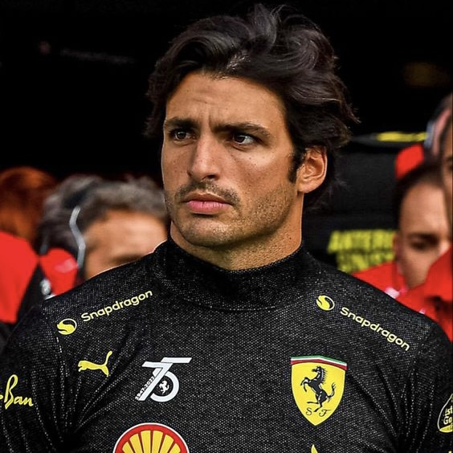
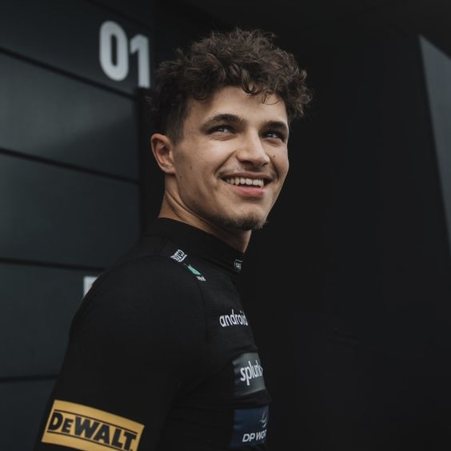
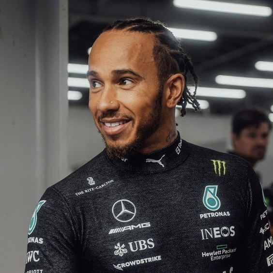
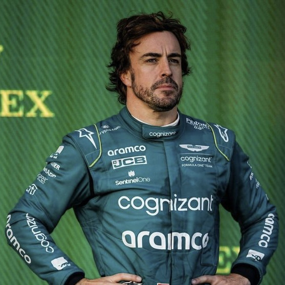
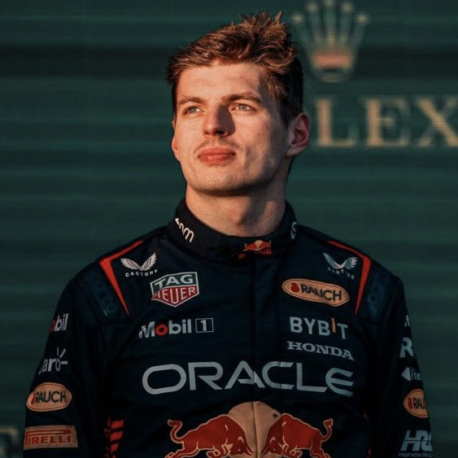

Carlos Sainz Junior (also known as Smooth Operator)
As a girl who's head over heels for Carlos Sainz, let me tell you, it's not just because he's incredibly attractive, sweet, and funny (although, let's be real, that doesn't hurt). It's because he's truly deserving of that top spot in my personal favorite drivers' list.
Let's rewind to the 2023 season. Carlos, the lone ranger outside the Red Bull team, snatching that first-place trophy at the Grand Prix? That was legendary. But what truly sets him apart is his strategic brilliance. He's not just out there racing; he's crafting the most effective, ingenious strategies for his team. Sure, there's a whole crew of people behind that, but his input? Priceless.
And yet, despite his talent, Ferrari decides to drop him like a hot potato for the 2025 season. Talk about a colossal mistake. They're basically waving goodbye to their best shot at taking on the likes of Mercedes and Red Bull. It's a move that makes you question their entire game plan.
But hey, their loss is someone else's gain. And maybe, just maybe, Carlos will find himself in a team that truly appreciates his worth. As for me, I'll keep cheering him on from the sidelines, hoping he gets the recognition he deserves, both on and off the track.

Lando Norris
Lando Norris holds a special place as the second top driver in my rankings. The fact that he was once teammates with the head honcho of this list, Carlos Sainz, at McLaren? Well, that might just be more than a coincidence. Lando Norris and McLaren seem like a match made in racing heaven.
There's something about the McLaren team that brings out the best in Lando. Maybe it's the friendly, family-like atmosphere that allows this cheerful young man to thrive and consistently deliver stellar performances.
When you tally up the most spectacular overtakes and podium snatches throughout the 2023 season, Lando's got the edge, hands down. He's viewed as a blossoming talent, and hopefully, we'll get to witness his journey in Formula 1 for a long time to come.

Lewis Hamilton
When it comes to Lewis Hamilton, sometimes there's just no need for explanations. For many, this seven-time Formula 1 champion (six of which were consecutive) would automatically claim the top spot.
But for me, diving into the world of Formula 1 relatively recently, I find myself drawn more to the underdogs, to the young guns with fire in their eyes. Hamilton, on the other hand, showcases his speed and resilience as if it's just another day at the office.
After the fateful defeat to Max Verstappen in 2021, Lewis seemed somewhat stifled, and his performances didn't shine as brightly. It's like everyone can sense that he's only in the race to beat his main rival.
Though Lewis comes across as a fairly pleasant individual, we can all hear how he communicates with his team over the radio during races. It's as if he's the most important person there, and that can be off-putting because despite all the importance and grandeur, Lewis didn't claim a single first-place finish in 2023.
Well, his skill and perseverance rightfully earn him the third spot in my rankings.

Fernando Alonso
Fernando Alonso is simply impossible not to love. He's funny, charming, kind, and stubborn... oh, and did I mention he's Spanish and 20 years older than me?
Even on one of the worst-performing cars, Fernando manages to outshine all the other drivers. A man who secures a fourth-place finish among drivers and leads his team alongside an underperforming teammate to fifth place deserves all the respect in the world.

Max Verstappen
Honestly, I was a genuine and outspoken Max Verstappen hater at the start of the 2023 season. As I've mentioned before, I tend to root for the underdogs rather than for drivers whose victories seem guaranteed at every Grand Prix of the season. However, the more I learned about his personality, his dedication and efforts, his supernatural talent, the more respect for him grew in my heart.
Sure, watching Max Verstappen isn't thrilling – who finds any sport exciting when you already know the winner in advance? But, well, Max is the future legend.